i made a typeface to celebrate the flower revolutions in the world. most of the flower revolutions were non violent, thats why they use flowers to name them after.


taxonomy
If you ever, ever pause to reflect, you'll notice that flowers accompany us through every stage of life: we are welcomed into the world with flowers, they adorn our most significant celebrations, and when we depart, we rest among them.
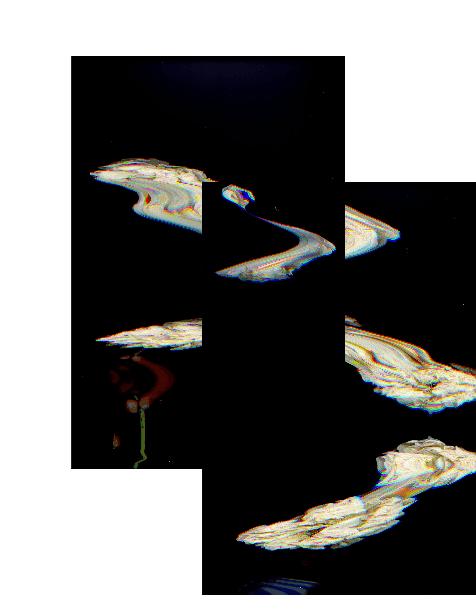
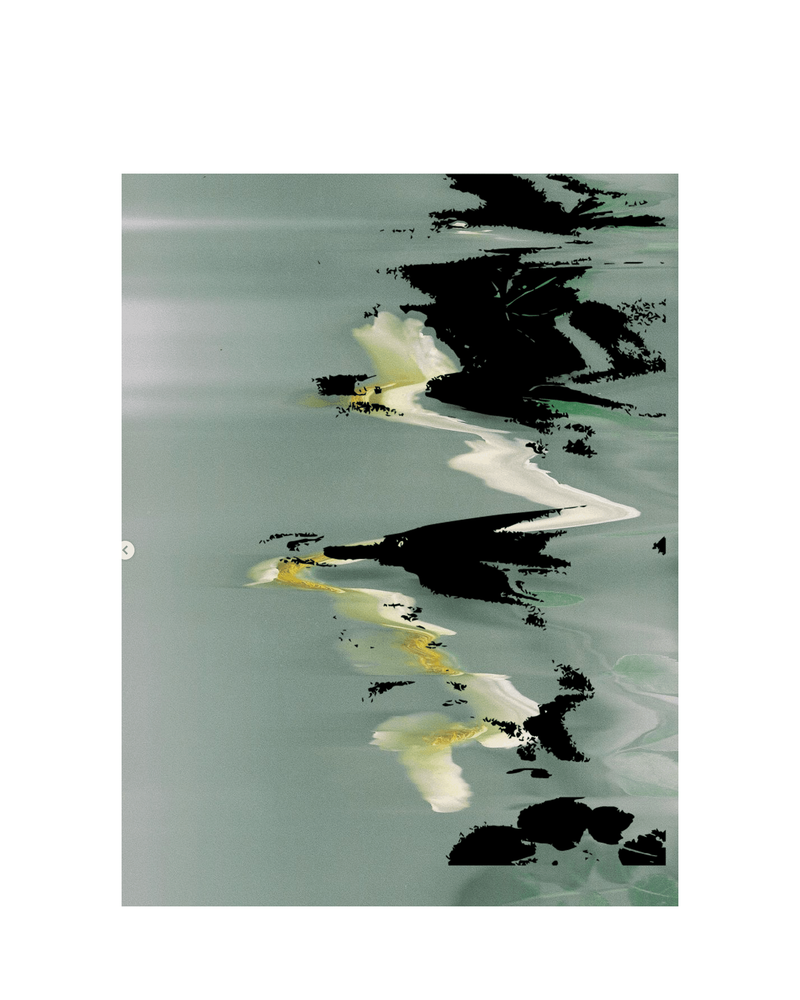
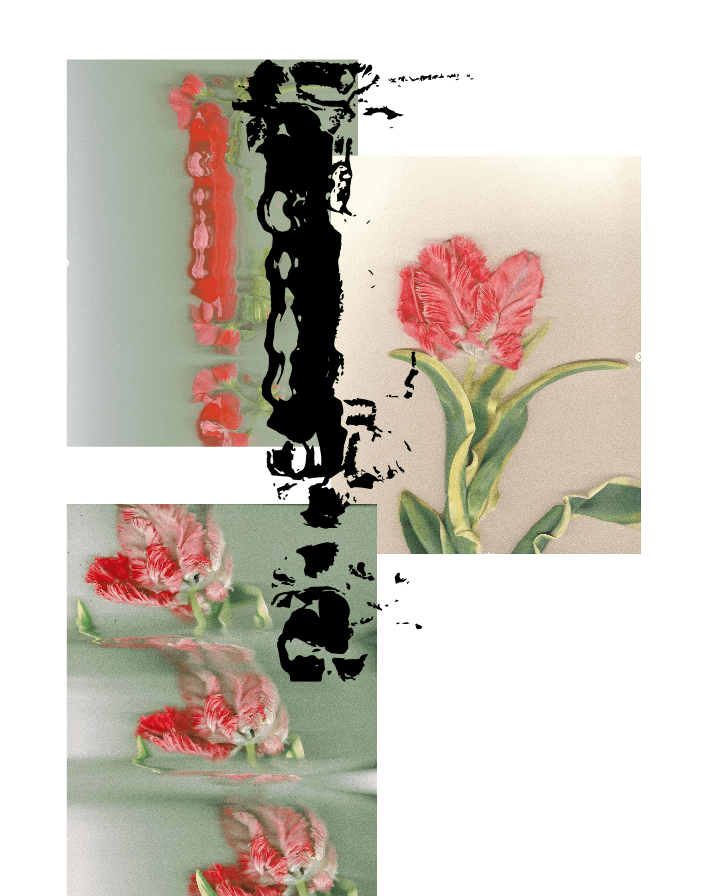
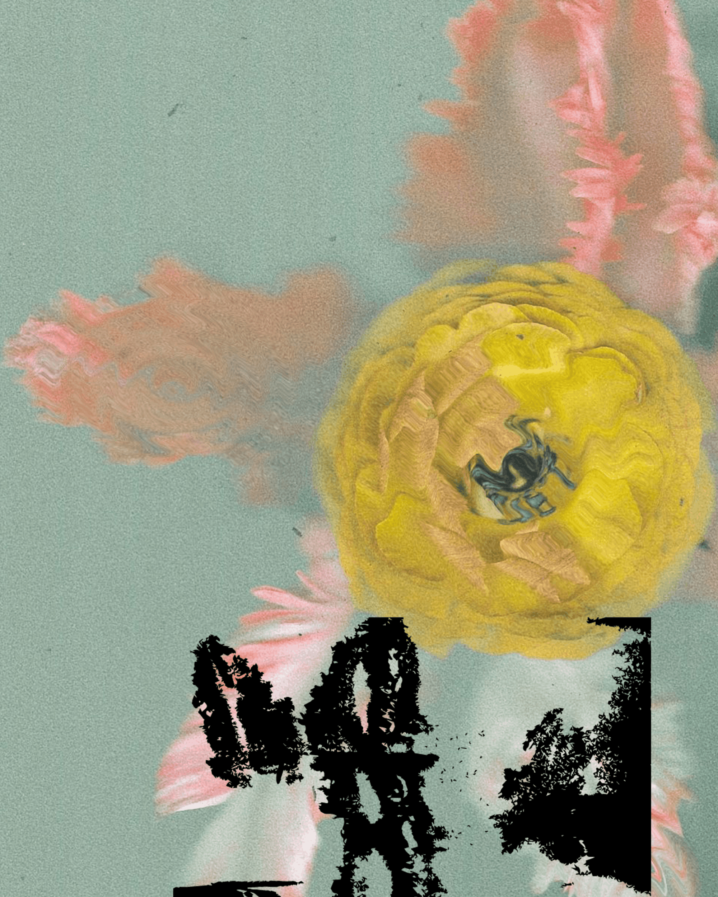
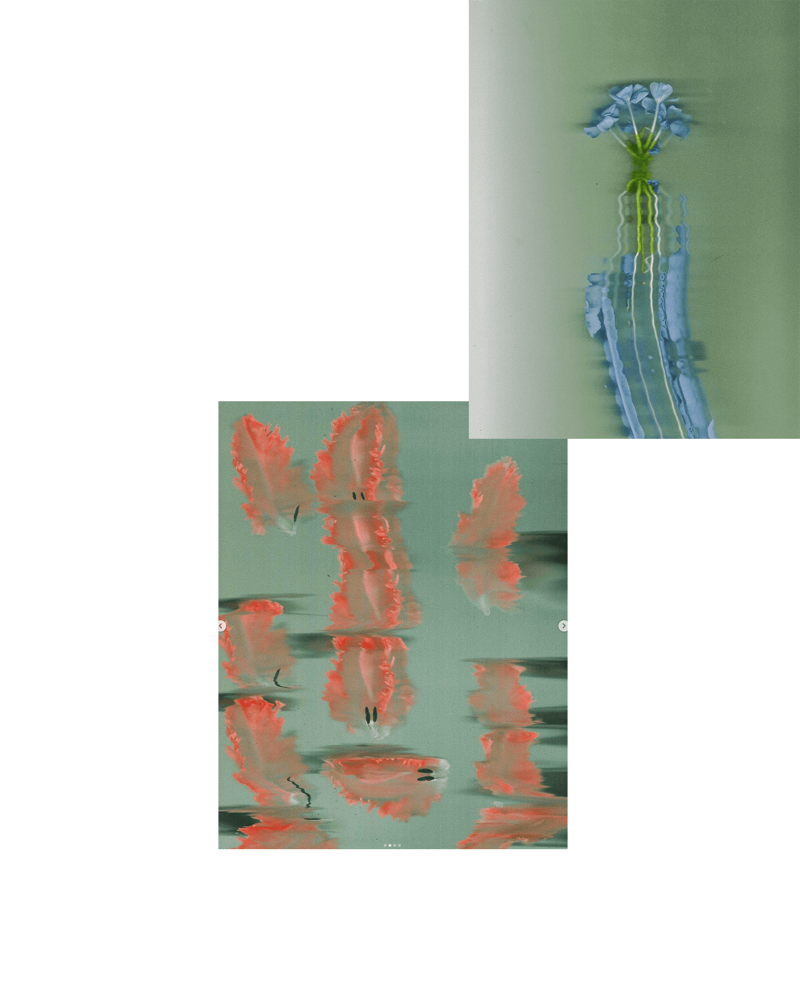
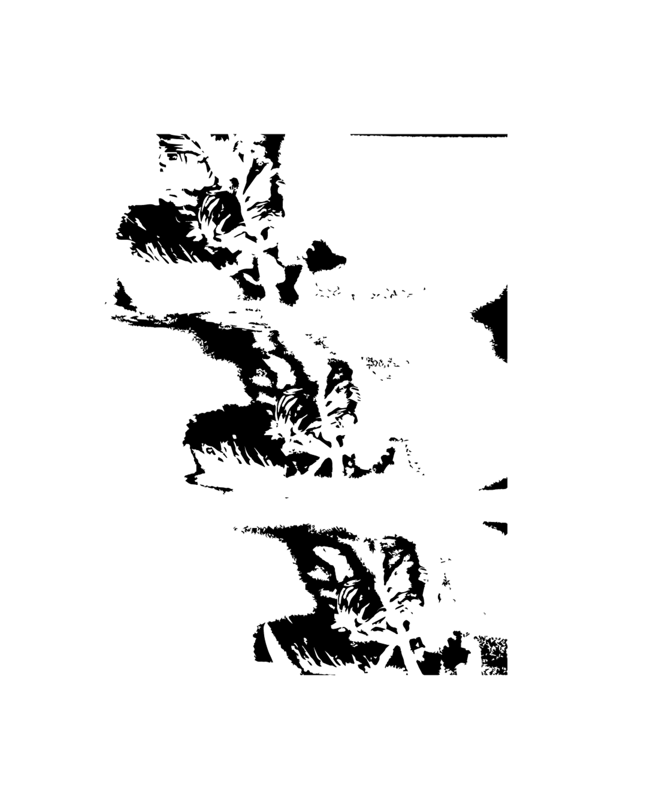
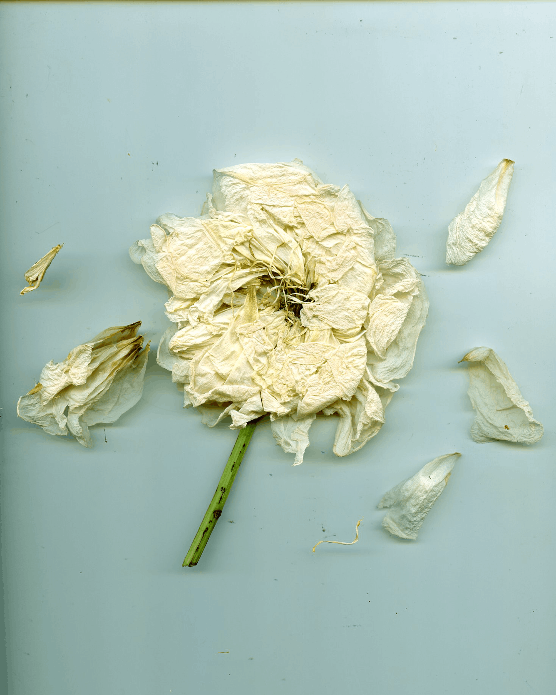
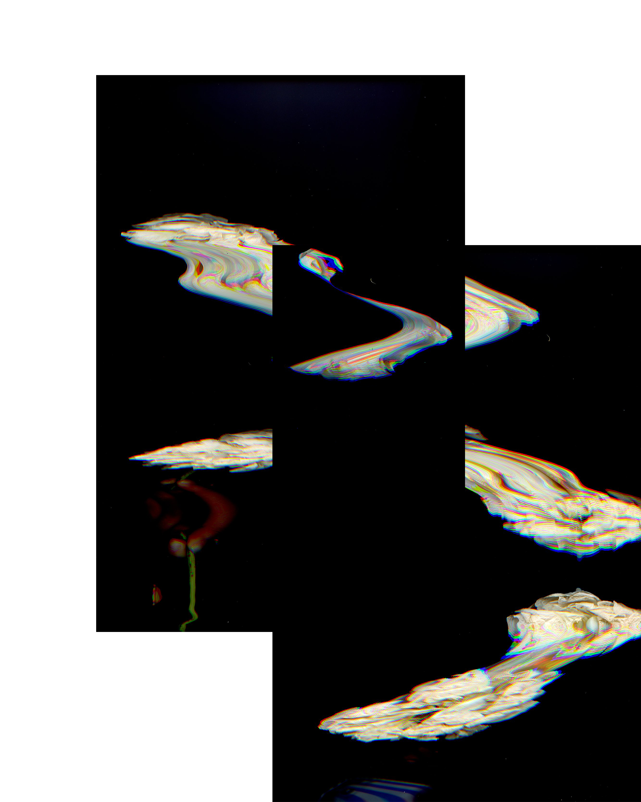
Their beauty and profound symbolism make flowers powerful emblems for various aspects of life. This is why non-violent revolutions are named after flowers, capturing the essence of peace and transformation.
Literature references i found about this subject:
Anna Jermolaewa
The Penultimate, Installation (Carnations, roses, orange tree, cedar, tulips, bluets, saffron crocuses, jasmine, lotus), 2017
Anna Jermolaewa
The Penultimate, Installation (Carnations, roses, orange tree, cedar, tulips, bluets, saffron crocuses, jasmine, lotus), 2017
[...] Alongside such works in the characteristic style of documentaries, there are installations in which a media-effective political symbolism is concentrated in seeming objectivity, together with its photographic reproduction. In the context of an exhibition for the centenary of the October Revolution in St. Petersburg, Jermolaewa presented a series of bouquets: carnations, roses, orange branches, cedars, tulips, cornflowers, lotuses, saffron crocuses and jasmine (The Penultimate, 2017).
Each of these plants is a color-symbol of a “revolution”. Beginning with the military putsch against the dictatorship in 1974, which the population welcomed with red carnations, „owers with positive connotations and an identifying color represent a regime change initiated by the people and usually running peacefully.
The Carnation Revolution was followed in 2003 by the Rose Revolution in Georgia, in 2004 by the Orange Revolution in Ukraine, in 2005 by the Cedar Revolution in Lebanon and the Tulip Revolution in Kyrgyzstan and in 2007 the (unsuccessful) Cornflower Revolution in Belorussia. Also characterized as “color revolutions” by the international media were the Safron Revolution of 2007 in Myanmar, the Jasmine Revolution of 2010 in Tunisia and the Lotus Revolution of 2011 in Egypt.
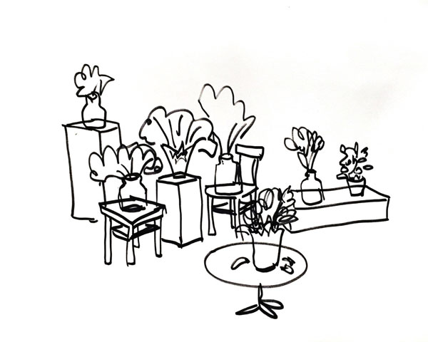
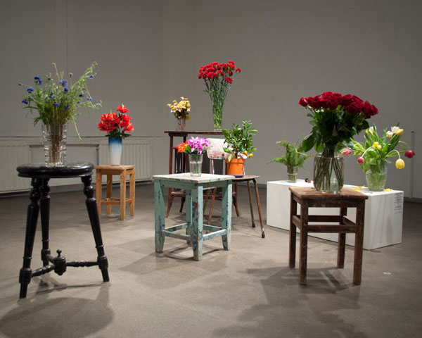
For Jermolaewa the flowers presented in the style of still lifes are a reminder of what political rulers like Putin most fear: an overthrow originating with the people. Together with Srđa Popovič, who founded the Center for Applied Nonviolent Action and Strategies (CANVAS), in 2012 she held a workshop on non-violent resistance and the role that art could play in it.
Even in the internet age more is needed to achieve something politically than a mere click on a petition. Only the physical presence of many in real space creates pictures whose global circulation builds up the pressure that erodes out-dated structures.
Müller, Vanessa Joan: Anna Jermolaewa. Portfolio, in: Eikon, 2018, #101, S. 42 - 45
Emiko Ohnuki-Tierney
Flowers That Kill - Communicative Opacity in Political Spaces
Emiko Ohnuki-Tierney
Flowers That Kill - Communicative Opacity in Political Spaces
Even Marxist student soldiers who were forced to become pilots for the special attack force (kamikaze) were utterly unaware that the single pink cherry blossom painted on the side of the airplane for their final flight represented, not the celebration of life, but their own life sacrificed for a country they deemed to have been corrupted by its imperial ambitions, militarism, capitalism, and egotism. When Hitler’s propaganda machinery foregrounded the Führer receiving roses from women and children, he was portrayed as the benevolent father to all Germans without a hint of the utterly destructive power he wielded. By leading people to their own deaths and those of countless others, these flowers did, after all, kill, albeit indirectly and in somewhat different ways.
The explanation for this phenomenon lies in our unawareness of communicative opacity, which can lead people to unknowingly cooperate in their own subjugation and/or march to their own destruction in war, a denouement that people realize when it is too late, as happened to the Japanese. Even in ordinary circumstances, communicative opacity plays an important yet often highly subtle role when marginalized social groups are not represented in a symbol of the collective self and yet are unaware of this, being co-opted by the symbolic meaning and power of the dominant group within society.1 This book represents my effort to seek possible factors that contribute to communicative opacity and to point out the urgency of considering communicative opacity an important political issue—including when people’s lives are on the line.
Communication is of fundamental importance not only for the survival of a social group but also for the daily interactions among social animals, especially humans. Communication is the bedrock of any society and is synonymous with culture (Hall ([1966] 1969; Leach 1976).
Although its difficulties and complexities have been a central and perennial interest of scholars of many disciplines, a major assumption has been that human communication is possible if only we try hard enough. A detailed discussion of Enlightenment rationality and political rationality is beyond the scope of this book, but let me choose just one representative scholar—Jürgen Habermas, who advocated “communicative rationality,” which enables “coordination” among individuals with different goals: “Language is a medium of communication that serves understanding, whereas actors, in coming to an understanding with one another so as to coordinate their actions, pursue their own particular aims” (Habermas 1984: 101). His communicative action takes place when “all participants harmonize their individual plans of action with one another and thus pursue their illocutionary aims without reservation” (Habermas 1984: 294, italics in the original). In his view, language and the illocutionary act, in particular, lead to “Reason and the Rationalization of Society”—the subtitle of volume one of The Theory of Communicative Action (1984). His model and those who follow political rationality in general do not leave room for communicative opacity.
Diana Budds
A Secret History Of Global Politics, Told Through Flowers
Diana Budds
A Secret History Of Global Politics, Told Through Flowers
Artist Taryn Simon imported over 4,000 blooms to build bouquets based on historic floral centerpieces.
In 1968, representatives from Eastern Bloc countries signed the Bratislava Declaration reaffirming their commitment to Marxism-Leninism. Nonetheless, 16 days later the USSR would invade Czechoslovakia after realizing that democratic reforms were taking place.
“These flowers sat between powerful men as they signed agreements designed to influence the fate of the world.”
At the conference, representatives were stationed at a table dressed with a bouquet of humble carnations. What might seem like a bit of historical trivia became an avenue to delve into global politics and economics for New York–based artist Taryn Simon, whose exhibition, Paperwork and the Will of Capital, is an in-depth study and creative meditation on the floral arrangements that accompanied major political meetings–from treaty signings to trade agreements–throughout history.
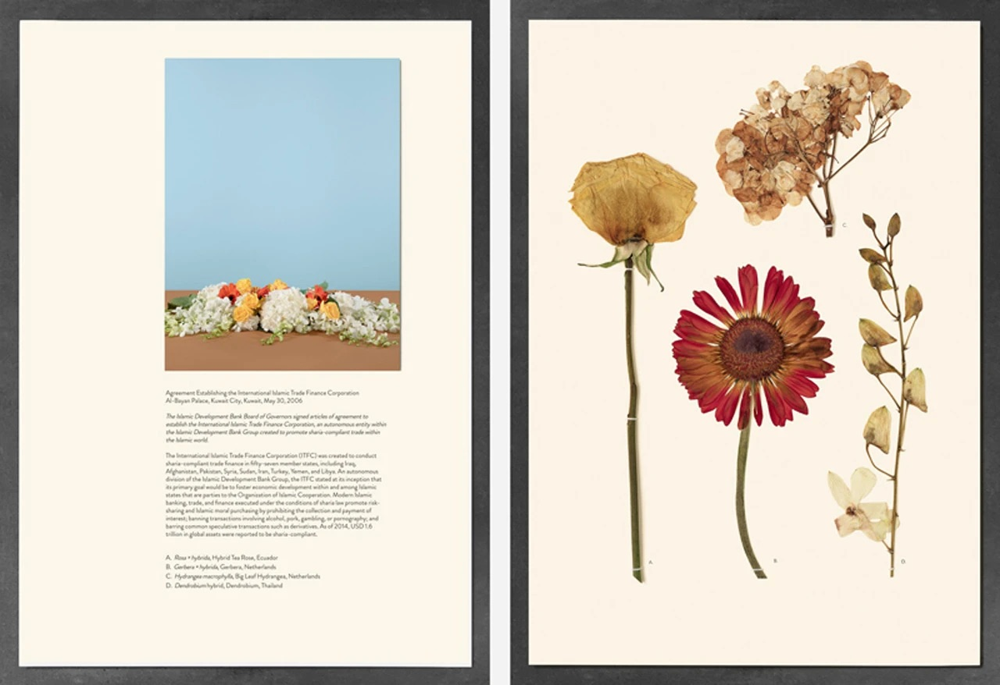
Simon’s fascination with botanicals began after she discovered a book that included dried specimens by George Sinclair, the 19th-century horticulturist who influenced Charles Darwin’s research. “I was interested in using tactile material in this world of disposable, digital data,” Simon says.
She also came across a photograph of Hitler and Mussolini sitting around a table adorned with a bouquet at the 1938 Munich Agreement. “I started thinking about the flowers as silent witnesses listening to man’s determination to control the economic, geographic, and political fate of the world,” she says.
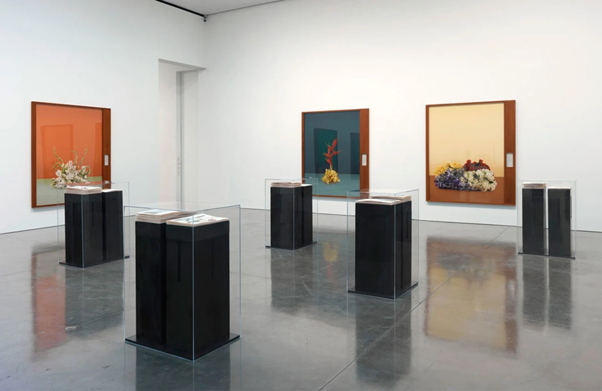
(c) Taryn Simon. Courtesy Gagosian Gallery
Simon began researching more important political meetings, from a 2006 agreement establishing the International Islamic Trade Finance Corporation, to a meeting concerning refugees between the Australian and Cambodian governments, to a 1944 meeting that would lead to the establishment of the International Monetary Fund.
She took notes of the precise floral arrangements that appeared in archival snapshots, and then painstakingly recreated them—36 in all—by importing over 4,000 plants from the Aalsmeer Flower Auction in the Netherlands. With a sales rate of 20 million flowers per day, Aalsmeer is the largest botanical marketplace in the world, where flowers are imported from other countries and then exported again after their sale, a global economic phenomenon that mirrored Simon’s interest in geopolitics.
DMI HAW Hamburg SS2024
Dedicaced to my family, anh Tung, anh Quang, Dung, chi Nga, chi Ngoc, chi Chi, anh Thanh, Lan, Minh Anh, chi Thuy, anh Cuong and to all my friends. You guys inspired me everyday to live like the flowers.